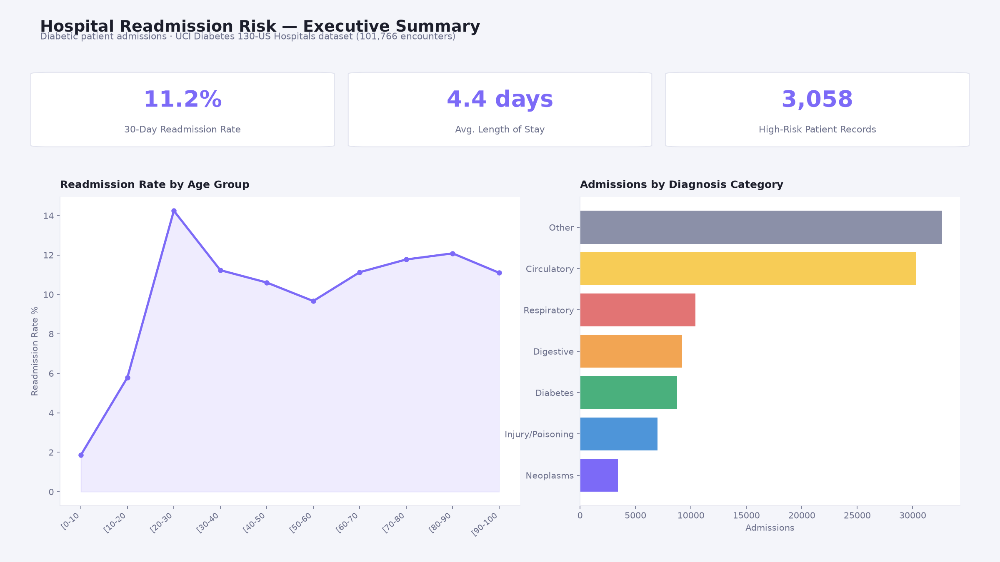
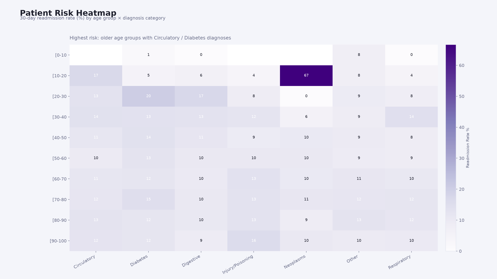
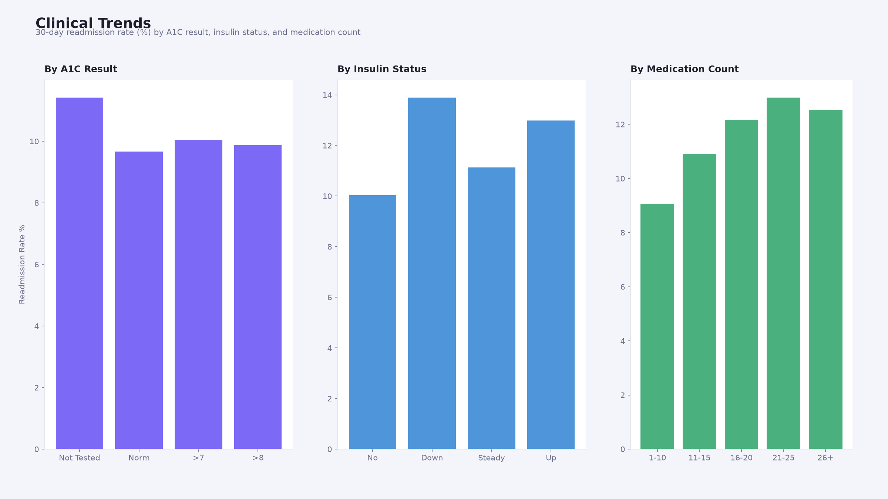

A 3-page executive dashboard built on the UCI Diabetes 130-US Hospitals dataset
(101,766 admissions), surfacing readmission risk by patient demographics, diagnosis,
and treatment factors.

Page 1
Executive Summary
KPI cards: 30-day readmission rate, average length of stay, high-risk patient count
Readmission rate by age group — risk climbs sharply after age 20, then stays elevated
Admissions by diagnosis category, highlighting Circulatory and Diabetes as top volume drivers

Page 2
Patient Risk Heatmap
Readmission rate by age group × diagnosis category, built for drill-through to patient detail
Designed to flag the specific age/diagnosis combinations clinical teams should prioritise
Older age groups with Circulatory or Diabetes diagnoses consistently run highest risk

Page 3
Clinical Trends
A1C impact: untested patients show the highest readmission rate of any group
Insulin dose changes ("Up"/"Down") correlate with higher readmission than steady dosing
Medication count trends upward with readmission rate, even past ~15 prescribed medications